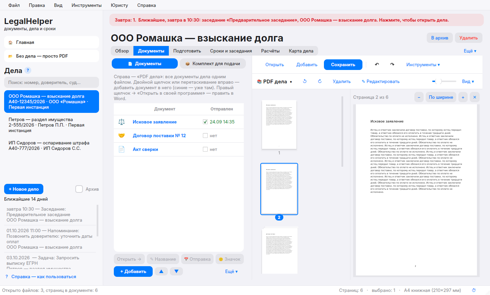

Рабочее место юриста
в одной программе
Дела, сроки и напоминания, все документы дела одним PDF, шаблоны исков и ходатайств, расчёты, опись почты — и дела на телефоне перед заседанием. Бесплатно. Всё хранится на вашем компьютере.
Скачать LegalHelperдля Windows 10 и 11 · бесплатно
Как установить — 4 шага
Первая установка занимает 10–20 минут: программа сама скачивает всё нужное. Потом обновления ставятся сами.
Скачайте
Нажмите синюю кнопку «Скачать LegalHelper» вверху. Файл LegalHelper-main.zip появится в папке «Загрузки».
Распакуйте
Щёлкните по архиву правой кнопкой мыши → «Извлечь все…» → «Извлечь». Откроется папка LegalHelper-main.
Запустите
В этой папке дважды щёлкните файл «УСТАНОВИТЬ». Откроется чёрное окно — не закрывайте его, просто подождите.
Готово
Программа откроется сама, на рабочем столе появится ярлык LegalHelper. Пройдите обучение со стрелками — 10 минут.
Что умеет
Всё, что нужно юристу каждый день, — без лишних программ.
Дела
Карточка дела, суды и инстанции, стороны, ссылка на дело на сайте суда.
Одно дело — один PDF
Все документы дела собираются в один файл: Word, сканы, PDF. Перетаскивайте мышкой.
Сроки и напоминания
Заседания, процессуальные сроки, всплывающие напоминания в нужное время.
Шаблоны
Иски, ходатайства, жалобы, заявления — поля дела подставляются сами.
Редактор PDF
Текст, подпись, печать, маркер, удаление и поворот страниц, сжатие, распознавание сканов.
Для суда и почты
Пакет для «Мой арбитр», опись вложения ф. 107, нумерация листов, «Копия верна».
Расчёты
Процессуальные сроки, госпошлина, проценты по ст. 395 ГК и неустойка.
Дела на телефоне
Памятка к заседанию и все документы — через ваш Яндекс Диск, даже без интернета.
Обучение
Программа сама стрелками покажет, куда нажимать. Справка — энциклопедия со 130 статьями.

Все документы дела — в одном файле
Слева — список документов, справа — «PDF дела». Добавили договор или претензию — они встали в общий файл. Правите в Word — страницы обновляются сами. «Сохранить» кладёт файл в папку дела, без лишних копий.
Что нового
Частые вопросы
Это правда бесплатно?
Да. Программа бесплатная, без рекламы и подписок. Её код открыт на GitHub.
Где хранятся мои дела и документы?
Только на вашем компьютере: в папке «Документы → LegalHelper». Программа никуда их не отправляет. Если вы сами включите «Дела на телефоне» — файлы пойдут в ваш Яндекс Диск.
Установка пишет «запущен прямо из архива»
Архив не распакован. Щёлкните по LegalHelper-main.zip правой кнопкой → «Извлечь все…» → «Извлечь», и запустите «УСТАНОВИТЬ» из новой папки.
Пишет «Python не установился»
- Откройте python.org/downloads и нажмите «Download Python».
- В установщике обязательно отметьте галочку «Add python.exe to PATH» внизу окна.
- Нажмите «Install Now», дождитесь конца и снова запустите «УСТАНОВИТЬ».
Антивирус ругается на файл
Разрешите файл «УСТАНОВИТЬ» / update.bat: это скрипт, который собирает программу из открытого кода прямо на вашем компьютере. Антивирусы часто осторожничают с такими скриптами.
Нужен ли Microsoft Word?
Для большинства функций — нет. Чтобы превращать Word-файлы в PDF, нужен Microsoft Word или бесплатный LibreOffice.
Как обновлять программу?
Никак — она обновляется сама: при запуске появится плашка «Доступна новая версия» с кнопками «Что нового» и «Установить сейчас». Дела и настройки сохраняются.
Есть ли версия для Mac или телефона?
Программа — для Windows. На телефоне (iPhone и Android) дела можно читать через Яндекс Диск: в деле нажмите «📱 На телефон», и помощник всё объяснит.
Связь с разработчиком
Не получилось установить, нашли ошибку или есть идея — напишите.